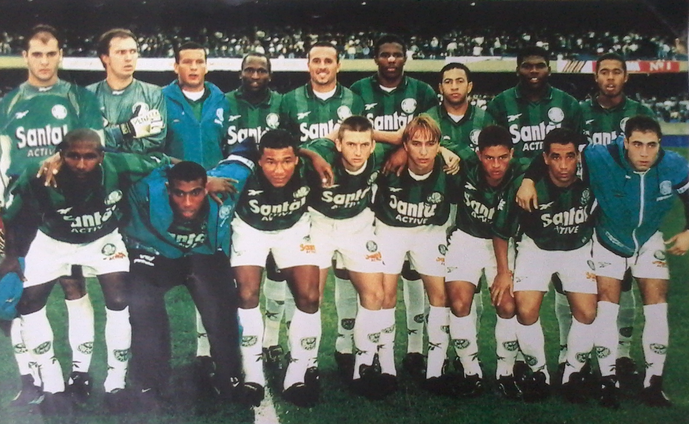
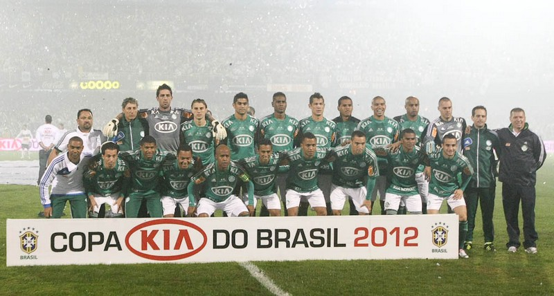

Copa do Brasil 1998
Após uma década de 80 frustrada, o Palmeiras voltou ao protagonismo nacional nos anos 90, vencendo três Campeonatos Paulistas (1993, 1994 e 1996), um Torneio Rio-São Paulo (1993), dois Campeonatos Brasileiros (1993 e 1994) e a Copa do Brasil de 1998. Esta última conquista foi marcante, pois, após vencer tudo o que podia no Brasil, garantiu a vaga que possibilitou a conquista da América no ano seguinte.
Copa do Brasil 2012
Quebrando um jejum de mais de dez anos sem títulos nacionais, Luiz Felipe Scolari e seus comandados conquistaram, em julho de 2012, a segunda Copa do Brasil da história do Palmeiras. Após a conquista da Copa dos Campeões em 2000, a torcida palestrina só comemorou um Campeonato Paulista em 2008 até a cabeçada de Betinho, na final contra o Coritiba, quebrar esta escrita.
Copa do Brasil 2012
Após temporada turbulenta em 2014, a palavra “reestruturação” foi a principal cartada palmeirense para o ano de 2015. O primeiro passo foi dado na diretoria de futebol, com Alexandre Mattos, que encabeçou a reformulação do departamento trazendo novos profissionais de diversas áreas e 25 novos jogadores ao longo da temporada. Além disso, o clube acertou o patrocínio máster da camisa com a Crefisa e viu seu programa de sócio-torcedor Avanti decolar e atingir o topo da lista entre os clubes brasileiros. O ano foi marcado também pela consolidação do Allianz Parque como aliado na ascensão alviverde.

Copa do Brasil 2020
O ano de 2020 (estendido a 2021) ficará eternizado na história palestrina pela conquista da Tríplice Coroa. Depois de faturar o Campeonato Paulista e a Conmebol Libertadores, o Palmeiras se sagrou tetracampeão da Copa do Brasil com vitória sobre o Grêmio na final. Desde 1993, quando ganhou os títulos paulista, brasileiro e do Torneio Rio-São Paulo, o Verdão não levantava três troféus na mesma temporada.